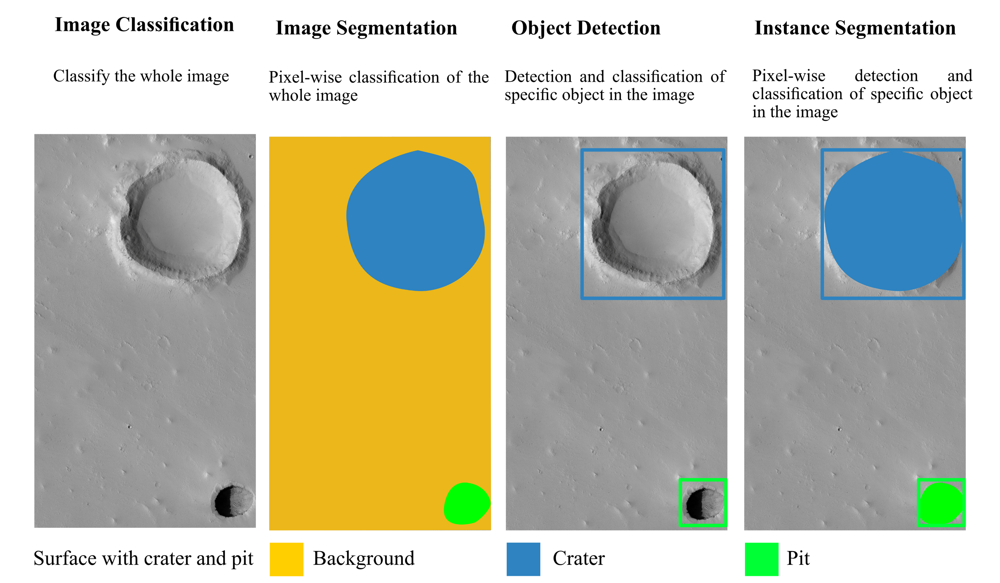

Pits and skylights are depressions of the terrain characterized by an elongated to almost circular shape, flat rims and bottom, walls ranging from almost flat to very steep and, in some cases sub-vertical.
This project has received funding from the European Union'S Horizon research and innovation programme under grant agreement No 101004214 and No 871149.
Planetary Mapping
"Planetary Mapping goes beyond map creation."
"It is about uncovering the mysteries of planetary surfaces, revealing their past and shaping our understanding of their future."
Which Planetary Bodies are Mapped?
"Planetary Mapping encompasses a wide range of celestial bodies within our Solar System, including planets, their moons, and even asteroids."
How is Planetary Mapping Accomplished?
- Collecting remote-sensed data from orbiters, rovers, and landers
- Processing, and analysis of the data.
- Defining symbology, units, and boundaries.
- Creating detailed geometries of planetary surfaces.
- Composing the final map.
Pit Landforms
Software
- USGS Integrated Software for Imagers and Spectrometers (ISIS): Processes RAW data and more.
- NASA Ames Stereo Pipeline (ASP): Generates Digital Elevation Model (DEM) and more.
- GIS (Geographic Information System): Includes QGIS, ArcGIS, ENVI, etc. Serves as the main tool.
- Open-source GIS plugins and tools:
- Mappy: Assists in map layers creation.
- OpenCraterTool: For crater counting and age estimation.
- A variety of open-source scripts for various tasks.
Can Deep Learning help?
"Yes, but!"

Framework?
Programming Language??
A beginners nightmare!
A complete nightmare for beginners approaching both Deep Learning for planetary mapping and programming languages.
Available tools?
NOAH-H, a deep-learning, terrain classification system for Mars: Results for the ExoMars Rover candidate landing sites
Available tools?
DoMars16k: A Diverse Dataset for Weakly Supervised Geomorphologic Analysis on Mars

Available tools?
Segment Anything

Available tools?
DeepLandforms: A Deep Learning Computer Vision Toolset Applied to a Prime Use Case for Mapping Planetary Skylights
Georeferenced Image Processing with Jupyter Notebook
This Jupyter Notebook is a versatile tool designed for processing georeferenced images, including formats like GeoTiff, JP2, png/jpeg with world files, and CUB (USGS ISIS). With this tool, you can perform a range of tasks:
- Convert images to GeoTiff, Cloud Optimize GeoTiff (COG), JP2, png/jpeg with world files, and CUB (USGS ISIS).
- Rescale pixel resolution of images.
- Create tiles for images larger than a user-defined size limit.
- Remove black borders from images or tiles.
- Crop images or tiles with a 1:1 centered aspect ratio.
Technical Details and Capabilities
The georeferenced image processing tool is built on a robust foundation:
- Powered by PyTorch with CUDA support for efficient processing.
- Utilizes essential geospatial Python libraries, including rasterio, geopandas, fiona, shapely, and more.
- Compatible with Facebook's Detectron2 framework, enabling advanced object detection.
- Integrated with Ultralytics YOLOv8 for object detection tasks.
- Supports Meta's Segment-anything for versatile image segmentation.
The Jupyter Notebooks included in the toolkit are designed for different tasks:
- Facebook's Detectron2 framework notebooks: One for training and one for inference.
- Ultralytics YOLO framework notebooks: One for training and one for inference.
Flexibility and Georeferencing
Moreover, the tool offers flexibility with the ability to install and use various frameworks and additional tools.
Notably, geospatial information is preserved within image metadata, allowing for the creation of georeferenced vectorial shapes during inference based on detections.
Results outputs
The output of the processing includes the following files:
- Crop of the detections (georeferenced)
- Label file in YOLO txt format for object detection
- Label file in COCO json format for object detection
- Geopackage containing a single layer with image name, confidence level, class representing the bounding-box centroids as points
- Geopackage containing a single layer with image name, confidence level, class representing the segmented shapes as polygons
Main Ongoing Activities
- Code optimization to enhance performance and efficiency.
- Implementation of topological validation functions on the results for data accuracy.
- Expansion of visualization capabilities, addressing limitations present in common visualization packages, especially for non-Earth Reference Systems.
Master Thesis Projects
Exploring DL for mapping:
- Pit Detection using U-Net: Dive into the fascinating world of pit detection leveraging the power of U-Net.
- Mars Dust Storm Detection using U-Net: Contribute to the understanding of Mars by detecting dust storms with U-Net.